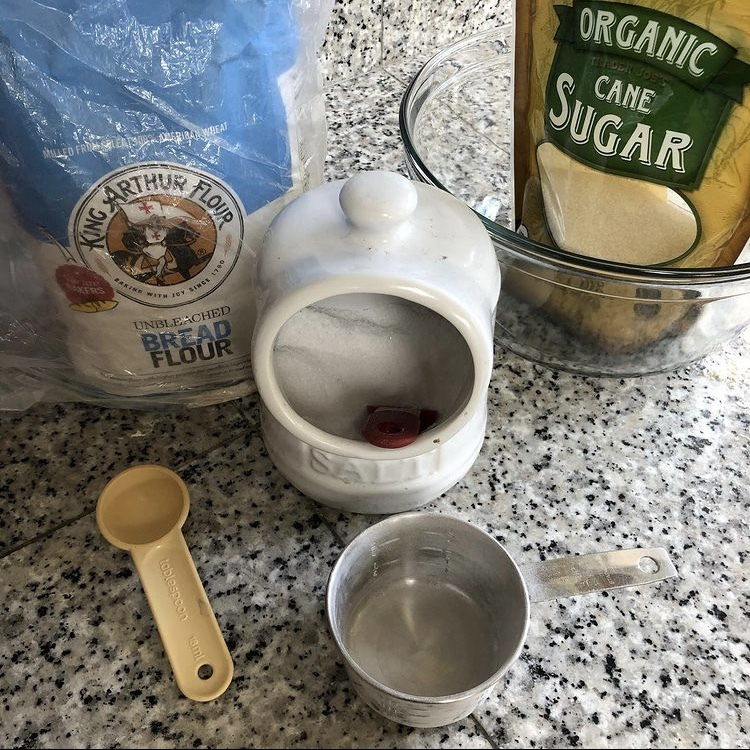
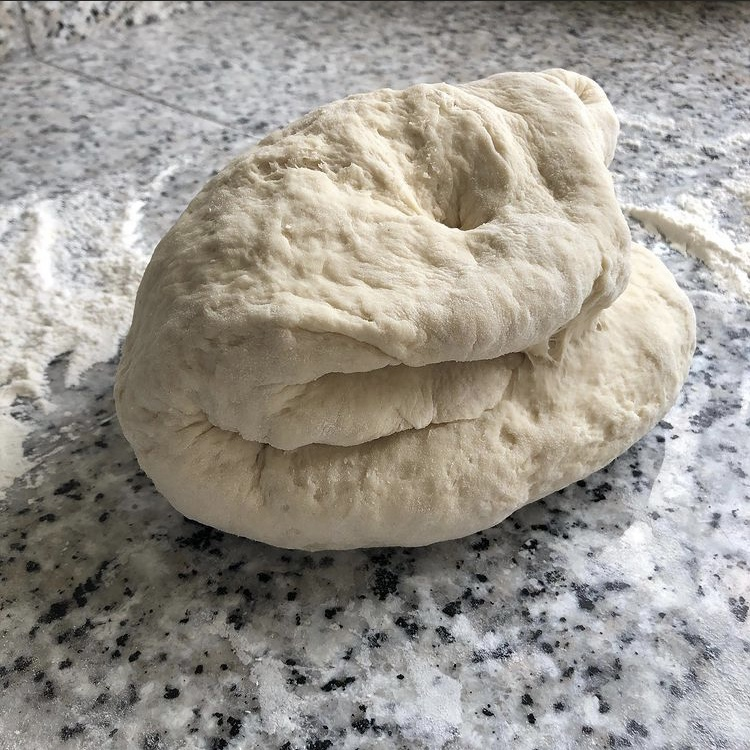
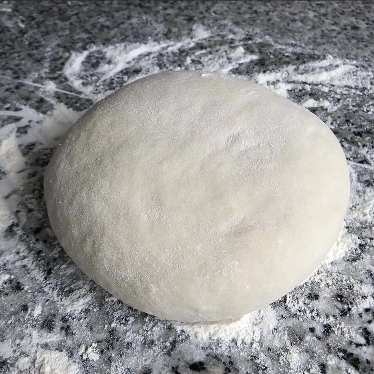
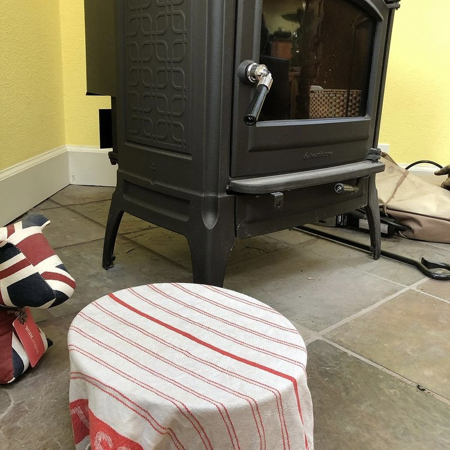
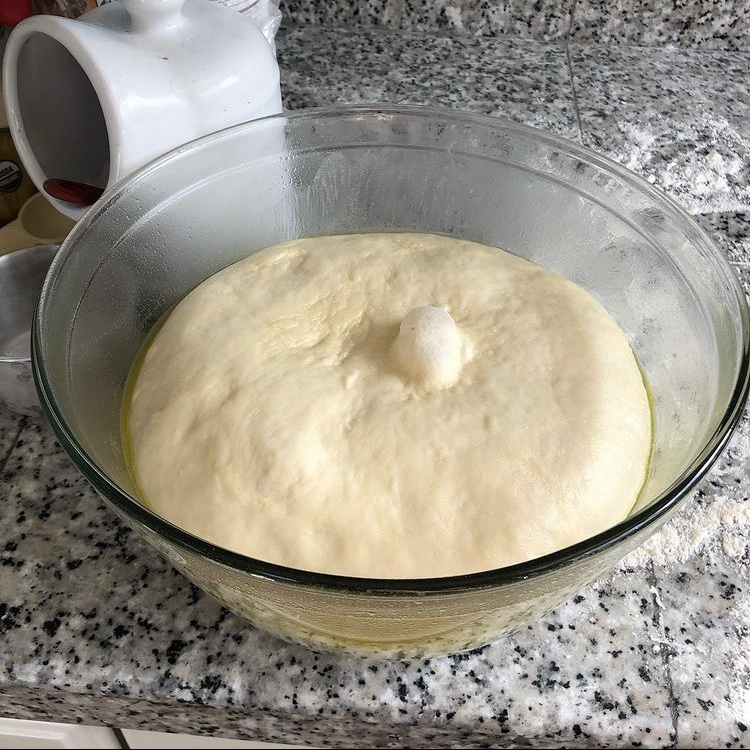
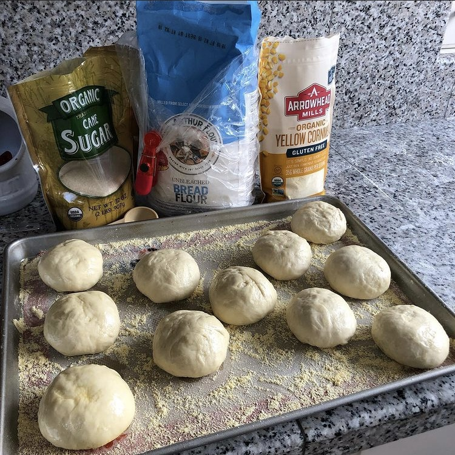
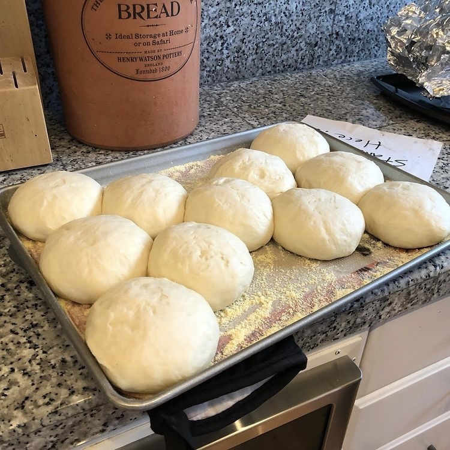

Description
This Recipe is for making a batch of bread rolls, perfect for a large meal like Thanksgiving. Makes about 10 rolls.

This Recipe is for making a batch of bread rolls, perfect for a large meal like Thanksgiving. Makes about 10 rolls.
Measure 2 Cups of hot water (as hot as you can get it to run) from the kitchen sink into a large mixing bowl, stir in a tablespoon of sugar and add the yeast. Wait for 5-10 minutes or until you see small bubbles forming in the mixture, this is the proof that your yeast is alive!
Add 2 level cups of flour to the water/yeast mix and stir before also adding a tablespoon of salt. Add the remaining 3 1/2 Cups of flour and mix to form a rough ball.
Try not to overdo it, but stretch and fold the dough resting occacionally until the texture is smooth and uniform, then form into a ball.
Clean, dry, and line your large mixing bowl with a coating of olive oil to stop the dough from sticking. Then place your dough in the bowl, cover with a wet cloth and place in a warm location for about 2 hours or until the dough has roughly doubled in size.
After your dough has doubled in size you have the option of doing a second rising (I basically never do this simply because it adds more time to the whole process, but I had this really great picture of my risen dough and nothing to do with it so here it is!) remove your dough from the bowl onto your kneading surface give it a few punches for fun and effect and repeat steps 3 and 4 with a minimum of kneading.
Remove your Dough from the mixing bowl and divide up into equal pieces, a weighing scale can help here, but I usually just eyeball it and it comes out ok. Get a baking sheet and spread a healthy amount of cornmeal on it to prevent your perfectly-formed proto-breadrolls from sticking to the sheet. Cover again witht a wet cloth and place them somewhere warm for another 2 hours for their second rising.
Uncover your delightful and plump rolls-to-be and preheat your oven to about 500 Degrees Fahrenheit. If you want you can crack an egg into a bowl, add two tablespoons of water, beat and wash over the top of your buns for a rich golden sheen on your finished product, alternatively you can just wait until your oven is up to temperature and slap those babies in there for about 20 minutes. Make sure to keep an eye on them about every 5 minutes and even more frequently towards the end so as not to let them burn and...
Voila! You should have a batch of delectable, scrumptious, bready goods to consume at your own disclosure. Take them to Thanksgiving dinner, share them with your friends, or keep them all to yourself (I won't judge!) but please do enjoy them with copious amounts of butter!